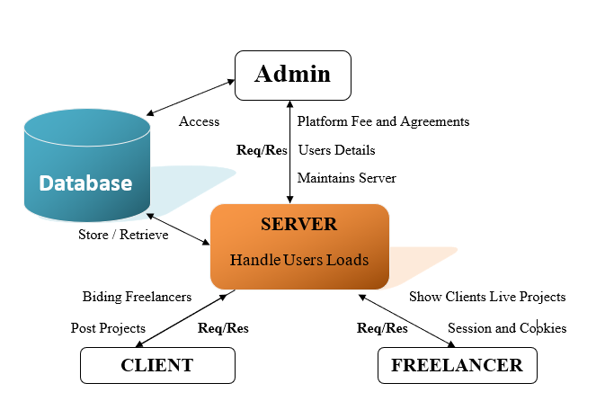
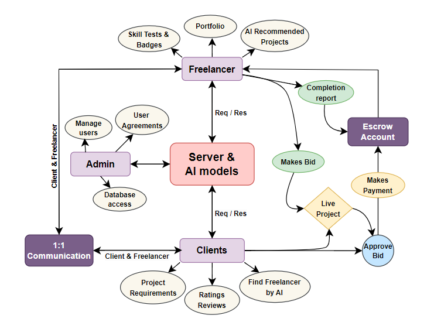

Freelancing Platform Overview
Problem Statement
Freelancing Opportunities for India There is a significant gap in connecting freelancers and gig workers with short-term and project-based job opportunities. An platform like upwork is needed to seamlessly connect freelancers with employers and provide tools for managing freelance projects
-
Requirements:
- Freelance Job Marketplace: • Develop a marketplace where freelancers can find short-term jobs, gig work, and project-based opportunities. • Allow employers to post projects, specify requirements, and invite freelancers to apply.
- Freelancer Profile and Portfolio Management: • Enable freelancers to create detailed profiles showcasing their skills, experiences, and portfolio of past work. • Integrate a rating and review system for feedback on completed projects.
- Extensive Search & Analytics • Enable Employers/Freelancers to do extensive search in the available data / generated data. • Generation of AI enabled insights into the Data and providing newer ways of information availability for job seekers / employers to engage. • AI based Recommendation Systems for seeking opportunities
- Escrow Account Creation • Create provisions for an escrow account that can be used to hold the money until the job is fully delivered. • Integrate secure payment gateways to facilitate smooth financial transactions between employers and freelancers
Expected Outcome:
The platform will connect freelancers with a wide range of job opportunities and provide them with tools to manage projects efficiently, leading to better job satisfaction and increased income opportunities. NOTE : This is an innovation opportunity and students are encouraged to think out of the box to develop solutions which can be presented in newer ways + which can address the needs in out of the box ways for a certain industry OR makes the platform generic. Above description serves as a guide to specify essential needs that can be satisfied for the developed solution and is not limited only to the scope described
Our Solution
Watch Video Explanation of our Solution
Watch in Youtube? Click here
- Solving inefficiencies in finding reliable freelancers:
The dependability and skill of freelancers might vary widely. It can be challenging for clients to choose the best freelancer for their assignments. The main goal of your solution is to solve this problem by introducing intelligent job matching. This means that clients and freelancers can be matched based on talents, historical performance, and other factors by employing algorithms or tools to shorten the time it takes to identify the ideal fit. - Transactions guaranteed and secured with escrow accounts:
Clients and freelancers may be concerned about payments and the possibility of receiving inadequate or non-paid services. Funds are kept by a third party through the use of escrow accounts until the client and freelancer are happy with the work. By ensuring safe transactions, this lowers conflict and promotes trust.
Problem Addressed:
- AI-based matching system to pair clients with the best freelancers:
This is a system powered by artificial intelligence that matches clients and independent contractors according to their needs. To maximize the match, the AI can take into account client preferences, skill ratings, and previous project performance. This invention has the potential to significantly raise recruiting decision quality, decrease mismatches, and boost productivity. - Separate projects and crowdsourcing options:
Both crowdsourcing and traditional project-based hiring are available via your platform. With crowdsourcing, a project may receive contributions from several freelancers, giving clients the option to combine contributions, select the best one, or receive numerous responses. This gives the hiring process more flexibility and accommodates a range of project sizes and requirements. - Built-in skill verification and transparent feedback system:
Freelancers' talents are validated, maybe by exams, certifications, or peer reviews, to guarantee quality and credibility. Clients can examine past job history, performance evaluations, and remarks from other clients because the feedback system is transparent. This benefits clients' decision-making and helps independent contractors establish their credibility.
Innovation and Uniqueness:
- Advertisements:
Online ads are one way freelancers can offer their skills. With the help of this tool, independent contractors can present their portfolios and skills to a wider audience, which will help them stand out and draw in more business. - Payment System:
Ensures that payments between clients and freelancers are secure and transparent. The escrow mechanism protects both parties: the clients payment is only released when the freelancer meets specific milestones or delivers satisfactory work, preventing fraud or payment issues. - Real-time Chatting: This feature allows real-time communication between clients and freelancers, enabling them to clarify requirements, discuss project details, and make adjustments on the fly. Good communication is key to avoiding misunderstandings and ensuring project success.
- Verified Badges: Freelancers earn verified badges after completing milestones or passing skill tests. These badges are a visual indication of a freelancers credibility and expertise, helping them stand out and instill confidence in clients. They act as rewards for proven capabilities.
- Teaching and Training:
The platform could offer online courses, webinars, or tutorials for both freelancers and clients. Freelancers can enhance their skills through training programs in various fields (like web development, graphic design, AI, etc.). Clients might also receive training on how to effectively manage projects, communicate with freelancers, and understand the deliverables.
Experienced freelancers could become mentors, offering teaching sessions or consultations for newer freelancers. This can be beneficial for those starting in the industry, enabling them to learn the required skills, tools, and best practices for freelancing success.
Note: Each of these features helps to create a secure, efficient, and reliable platform for both freelancers and clients, emphasizing innovation (AI matching, skill verification) and trust (escrow, badges).
Key Features:
Technology Stack
Front-End
- React: A fast, dynamic, and responsive user interface with component-based architecture for reusable and efficient rendering.
- Redux: Ensures predictable, centralized, and easy-to-debug state management, especially in larger applications.
- Tailwind CSS: Utility-first CSS framework for rapid UI development, enabling a responsive and modern design without extensive custom CSS.
- Shadcn UI: Pre-designed, customizable components built with Tailwind CSS for consistency and speed in development.
Back-End and Database
- Django: A secure, scalable back-end framework with built-in user authentication, ORM, and rapid development features.
- Node.js: JavaScript-based server-side processing, ideal for handling real-time data, APIs, and microservices.
- MySQL: A production-level relational database for handling large-scale data with indexing and querying capabilities.
- SQLite: A lightweight, serverless database ideal for small-scale applications or development environments.
TypeScript
- TypeScript: Adds type safety to your JavaScript code, reducing errors and improving maintainability in larger projects to enhance efficiency anomg the users.
Machine Learning and AI
- TensorFlow and Keras: Integrating machine learning models to offer AI-powered features such as recommendation systems, predictive analytics, and more.
Architecture
This design aims to create a secure, efficient, and intelligent freelancing ecosystem that benefits both service providers and clients while maintaining platform integrity through administrative controls.
Server & client Architecture
Complete process Architecture
Architecture Explanation
Core Components
- Freelancer: The primary user who offers services and get paid by the clients.
- Clients: Users who seek services from freelancers and pay to the them after completion of project.
- Admin: System administrators who manage the platform and update the trends and management of fake accounts , Negative feedbacks accounts & Forgery Accounts all these accounts has less ratings and clients can tell how the freelancer work with the client and give the feedback & ratings it will be helpfull to monitor who has these type of accounts. Also freelancer can review for a client so that other freelancers can know how the client is before taking up his/her project. this makes reliablility among the users and we can Stand out in the World.
- Server & AI models: The central hub that processes requests and hosts AI capabilities and AI Recommendations.
Freelancer Features
- Portfolio: Freelancers can showcase their work.
- Skill Tests & Badges: Freelancers can take tests to prove their skills and earn badges.
- AI Recommended Projects: The system uses AI to suggest suitable projects to freelancers.
- Makes Bid: Freelancers can bid on projects.
- Completion report: Freelancers submit reports upon project completion.
Client Features
- Project Requirements: Clients can post their project needs.
- Find Freelancer by AI: AI assists clients in finding suitable freelancers.
- Ratings Reviews: Clients can rate and review freelancers.
- Approve Bid: Clients can approve freelancer bids.
Admin Functions
- Manage users: Admins can oversee user accounts.
- User Agreements: Manage terms and conditions.
- Database access: Admins have access to the system's database.
Communication
- 1:1 Communication: Direct messaging between clients and freelancers.
Project Lifecycle
- Live Project: Active projects in progress.
- Escrow Account: Secure payment holding.
- Makes Payment: Client payments for completed work.
AI Integration
- The Server & AI models component interacts with both freelancers and clients, likely providing matchmaking, recommendations, and other intelligent features.
Key Aspects of the Architecture
- AI-driven features for project recommendations and freelancer matching.
- Secure payment handling through an escrow system.
- A comprehensive skill verification system for freelancers.
- Direct communication channels between clients and freelancers.
- Administrative oversight for platform management.
- A structured project lifecycle from bidding to completion and payment.
Implementation Process
-
Develop Frontend and Backend:
Start by building the core structure of the website. Use React and Redux for the front-end to create a responsive and dynamic user interface. For the back-end, leverage Django or Node.js to handle server-side processing, data management, and user authentication. MySQL or SQLite will manage the database.
-
Integrate with AI Features:
After setting up the core functionality, integrate machine learning and AI features using TensorFlow and Keras. This could include features like recommendation systems, predictive analytics, or data-driven automation to enhance user experience.
-
Implement Escrow Payment System:
Develop a secure payment gateway with built-in escrow services to ensure transparency and security between clients and freelancers. The escrow system will hold payments until both parties fulfill their obligations, adding trust to the platform.
-
Testing → Optimization → Deployment:
Once the core features and payment system are in place, thoroughly test the application to identify and fix any issues. Optimize the code and performance for better scalability and user experience. Finally, deploy the application to a live environment, ensuring it is ready for real-world use.
Feasibility Analysis:
- Technical: Utilizing popular open-source tools, reliable technologies, and integrating AI for smart recommendations and insights
- Financial: Low initial costs with scalable solutions, revenue generated from transaction fees, advertisements, and premium services
Potential Challenges and Risks:
- Complex Integration: Difficulty in acquiring and retaining a balanced pool of freelancers and clients
- Security: Ensuring data security and privacy, especially for financial transactions
- User Adoption: Attracting and retaining freelancers and employers
Strategies for Overcoming Challenges:
- Technical Complexity: Break the project into manageable parts and thoroughly test each component
- Security: Implement robust security protocols like two-factor authentication and SSL encryption
- User Adoption: Offer unique features like AI job matching, transparent feedback, and collaboration tools
Impact and Benefits
Potential Impact on Target Audience:
- Empowers freelancers by providing more work opportunities
- Helps clients find quality professionals efficiently
- Enhances freelancer credibility through skill verification and transparent feedback
- Builds long-term client-freelancer relationships through a streamlined project management system
Benefits of the Solution:
- Social: Creates jobs for freelancers worldwide, bridging the gap between talent and opportunity
- Economic: Lowers transaction costs and eliminates middlemen in the hiring process
- Environmental: Promotes remote work, reducing carbon emissions from commuting
- Business Growth: Enables businesses to scale quickly by accessing a flexible, global workforce